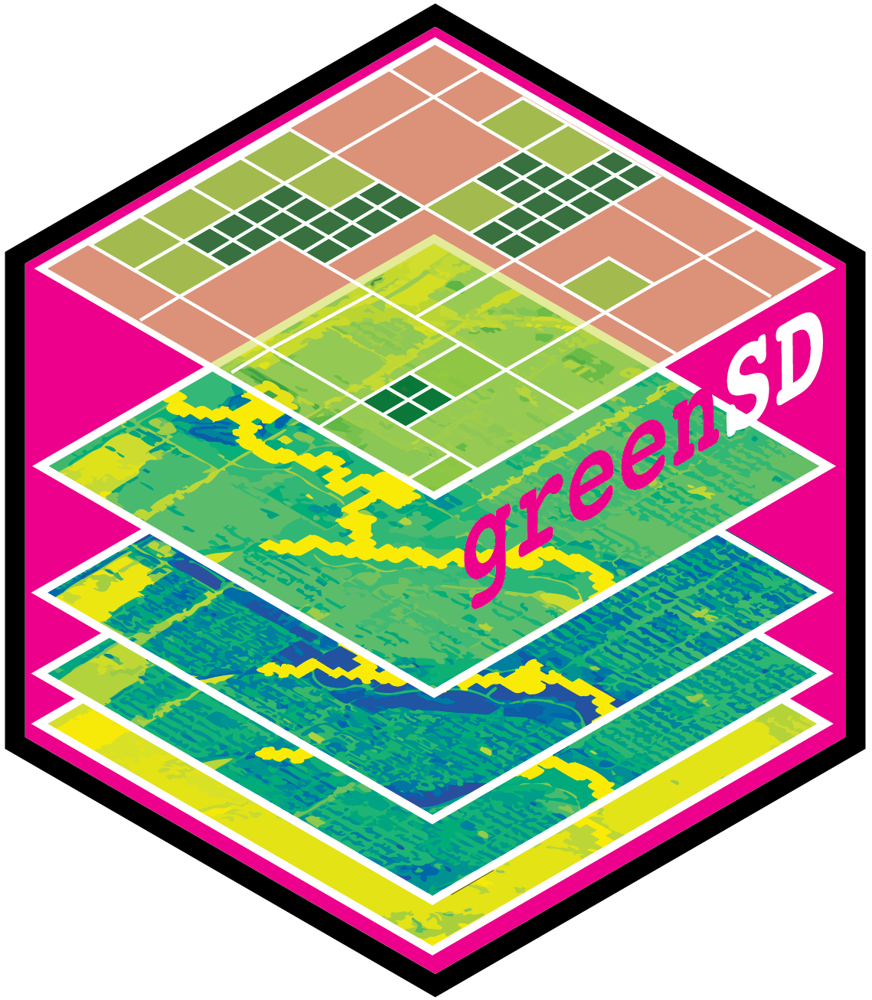

Sample greenspace-realted data from Greenspace Seasonality Data Cube, ESA WorldCover 10m Annual Composites Dataset, or Sentinel-2-l2a images.
Source:R/core.R
sample_values.RdSamples values by locatoins from the Greenspace Seasonality Data Cube developed by Wu et al. (2024), ESA WorldCover 10m Annual Composites Dataset by Zanaga et al. (2021), or Sentinel-2-l2a images.
Usage
sample_values(
samples = NULL,
time = NULL,
year = NULL,
source = "gsdc",
output_bands = NULL,
cloud_cover = 10,
vege_perc = 0,
select = "latest",
method = "first",
quiet = TRUE
)Arguments
- samples
A list, matrix,
data.frame, orsfobject of point locations. Can be a list of length-2 numeric vectors (list(c(lon, lat))), a 2-column matrix or data.frame, or ansfobject with POINT geometry in any CRS.- time
numeric or vector. The time of interest. See Detail.
- year
numeric or vector. Deprecated alias for
time.- source
character. The data source for extracting greenspace values:
gsdcfor Greenspace Seasonality Data Cube (also seeget_gsdc()]),esa_ndvioresa_landcoverfor ESA WorldCover 10m Annual Dataset (also seeget_esa_wc()]), ands2a_ndviors2a_bandsfor Sentinel-2-l2a image data (also seeget_s2a_ndvi()]). The default isgsdc.- output_bands
vector. A list of band names (
c('B04', 'B08')). The default isNULL. (Only required, whensource = "s2a_bands") All available bands can be found here- cloud_cover
numeric. The percentage of cloud coverage for retrieving Sentinel-2-l2a images. (Only required, when
source = "s2a_ndvi"orsource = "s2a_bands")- vege_perc
numeric. The percentage of cloud coverage for retrieving Sentinel-2-l2a images. (Only required, when
source = "s2a_ndvi"orsource = "s2a_bands")- select
character. one of "latest", "earliest", "all". The default is "latest".
- method
character. A method for mosaicing layers: one of "mean", "median", "min", "max", "modal", "sum", "first", "last". The default is "first".
- quiet
logical. Whether show progress bars for some process.
Value
A data.frame containing greenspace values extracted at each point
across all bands. Each row corresponds to a sample location;
columns represent band values.
Details
time: For the greenspace seasonality data cube, only years from 2019 to 2022
are availabe. For ESA WorldCover 10m Annual Composites Dataset, only 2020
and 2021 are available.
Note
For sampling data from Greenspace Seasonality Data Cube samples must be
located within the same boundary of an available city in the data cube.
Use check_available_urban() and check_urban_boundary() to see supported
cities and their boundaries.
References
Wu, S., Song, Y., An, J. et al. High-resolution greenspace dynamic data cube from Sentinel-2 satellites over 1028 global major cities. Sci Data 11, 909 (2024). https://doi.org/10.1038/s41597-024-03746-7
Zanaga, D., Van De Kerchove, R., De Keersmaecker, W., Souverijns, N., Brockmann, C., Quast, R., Wevers, J., Grosu, A., Paccini, A., Vergnaud, S., Cartus, O., Santoro, M., Fritz, S., Georgieva, I., Lesiv, M., Carter, S., Herold, M., Li, L., Tsendbazar, N.-E., … Arino, O. (2021). ESA WorldCover 10 m 2020 v100 (Version v100). Zenodo. https://doi.org/10.5281/zenodo.5571936
Zanaga, D., Van De Kerchove, R., Daems, D., De Keersmaecker, W., Brockmann, C., Kirches, G., Wevers, J., Cartus, O., Santoro, M., Fritz, S., Lesiv, M., Herold, M., Tsendbazar, N.-E., Xu, P., Ramoino, F., & Arino, O. (2022). ESA WorldCover 10 m 2021 v200 (Version v200). Zenodo. https://doi.org/10.5281/zenodo.7254221
Examples
if (FALSE) { # \dontrun{
# see supported urban areas and their boundaries
check_available_urban()
boundary <- check_urban_boundary(uid = 11, plot = FALSE)
# sample locations within the boundary
samples <- sf::st_sample(boundary, size = 20)
# extract values
gs_samples <- sample_values(samples, time = 2022)
} # }